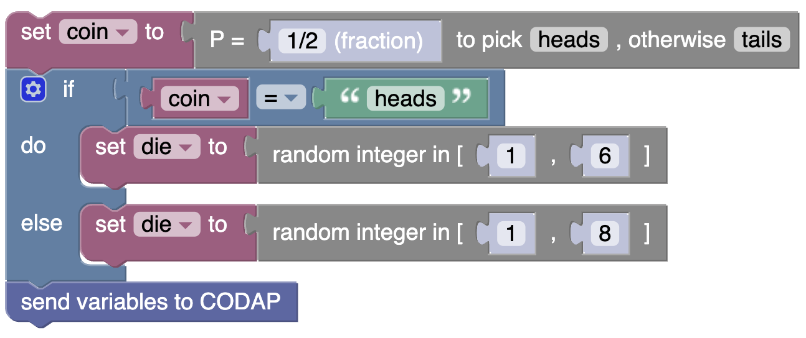
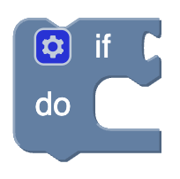
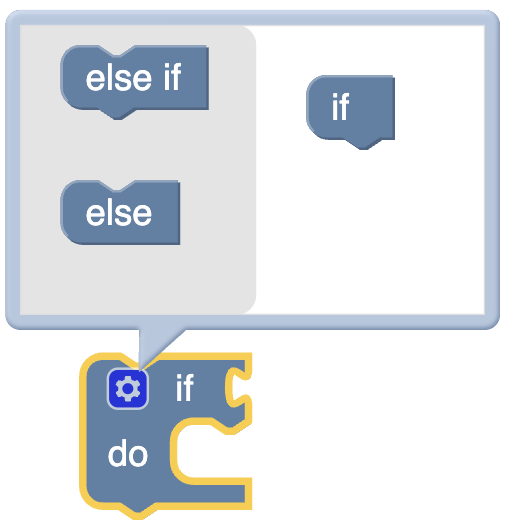
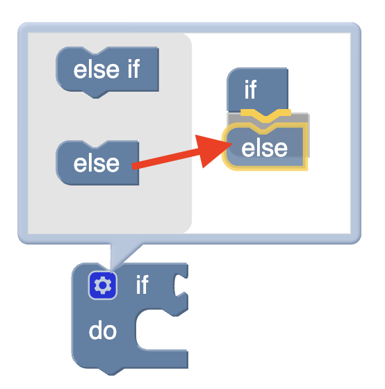
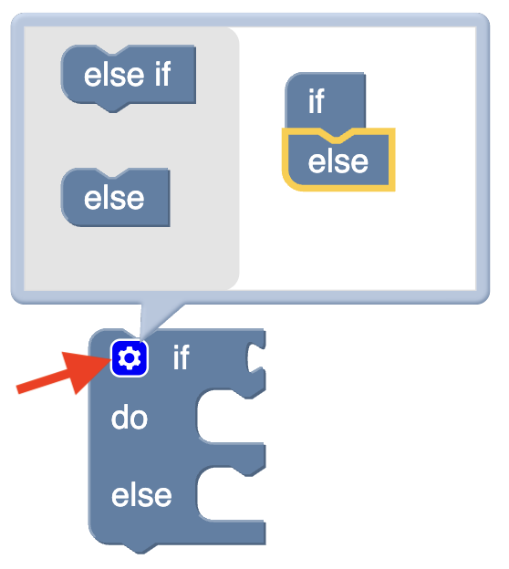

Simmer Guide
Conditionals (and conditional probability)
Sometimes, in probability, the chance of some event depends on the outcome of some other (usually previous) event.
For example, suppose you flip a coin. If you get heads, you roll a six-sided die. But if you get tails, you roll an eight-sided die. What’s the probability that you roll a three?
Here is a program that does the simulation:

This program includes a couple of new features.
- the
"heads"block is in theTextsection. Bring the empty text into the workspace and edit it there. - the
ifstatement lives in theControl and Loopssection. But how do you get the “else”?
Getting else
The tricky part about is how you get the else clause.
Get an
ifblock.Click the gear on the
ifblock. An additional “configuration” palette appears.Drag the little
elseblocklet from the left and attach it to the littleif.(Crucial!) To make the palette go away, click the gear again.

if block

else option and attach it to the if
Your turn!
- Make the program in the live illustration below.
- Wrap it in a loop and run it a few hundred times.
- Compute an empirical value for the probability of rolling a three.
- See if you can solve the problem theoretically and compare!
Problem: Penelope shoots two
Let’s do a problem.
Penelope is playing basketball and is shooting from the free-throw line. If she doesn’t make her first shot, she is done and gets zero points. If she does make her first shot, she gets one point … and she gets a second shot.
- Her chance of making the first shot is 65%.
- Her chance of making the second shot is 80%.
What are the possible results for Penelope, and what are their probabilities?
Make a simulation to model this situation in the live CODAP window below, and run it many times to figure out the probabiities. If you can, solve the problem theoretically and compare.